6．傅里叶级数
我们知道，傅里叶的工作表明，广泛的一类函数可以用三角级数来表示。找出函数具有收敛傅里叶级数的确切条件的问题尚未解决。柯西和泊松的努力没有得到结果。
狄利克雷在1822年到1825年期间在巴黎会见傅里叶之后，对傅里叶级数产生了兴趣。在一篇基本的论文《关于三角级数的收敛性》（Sur la convergence des séries trigonométriques）中(55)狄利克雷给出了代表一个给定f（x）的傅里叶级数是收敛的并且收敛到f（x）的第一组充分条件。狄利克雷给出的证明，是对傅里叶在其《热的解析理论》的末尾几节中草拟的证明的改进。考虑函数f（x），它或者是以2π为周期的，或者是在区间［－π，π］上给定而且在每一个从［－π，π］往左或往右的长为2π的区间上定义为周期的。狄利克雷的条件是：
（a）f（x）是单值、有界的。
（b）f（x）是分段连续的；即在（闭的）周期内只有有限多个间断点。
（c）f（x）是分段单调的；即在一个周期内只有有限多个最大值和最小值。
在基本周期的不同部分f（x）可以有不同的解析表示。
狄利克雷的证明方法是，直接求n项的和并研究当n趋于无穷时会出现什么情况。他证明：对于任给的x值，只要f（x）在该x处连续，则级数的和就是f（x），如果f（x）在该x处不连续，则级数的和是
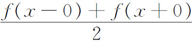
。在狄利克雷的证明中，必须仔细讨论当μ无限增加时积分
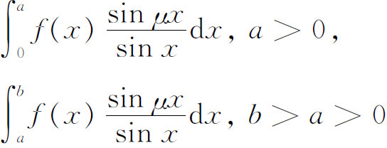
的极限值。这些积分至今还叫做狄利克雷积分。
与此工作相关联，狄利克雷给出了一个在有理点上取值为c而在无理点上取值为d的函数（第2节）。他曾希望推广积分的概念使得更大一类函数仍可表示为收敛到该函数的傅里叶级数，但是刚才提到的特殊函数就打算作为一个不能包括在一类更广积分概念中的例子。
黎曼有一段短时间曾在柏林在狄利克雷的指导下进行研究工作，而且对傅里叶级数产生了兴趣。1854年在格丁根在他为取得大学教授资格而写的论文《试用短文》中以此为题(56)，写了《用三角级数来表示函数》（Über die Darstellbarkeit einer Function durch einer trigonometrische Reihe），文章的目的是要找出函数f（x）必须满足的充要条件使在区间［－π，π］中的一点x处f（x）的傅里叶级数收敛到f（x）。
黎曼曾证明了基本定理：如果f（x）在［－π，π］上有界且可积，则傅里叶系数
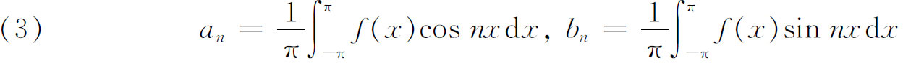
当n趋于无穷时趋于零。定理还表明有界可积的f（x）的傅里叶级数在［－π，π］中的一点处的收敛性只依赖于f（x）在该点邻域中的特性。但是寻求f（x）的傅里叶级数收敛到它自己的必要而又充分的条件的问题依旧没有解决。
黎曼开辟了另一个研究路子。他研究三角级数，但不需要根据公式（3）来确定傅里叶系数。他从级数
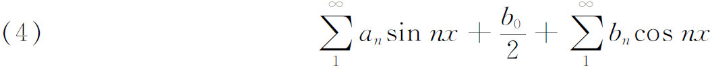
出发并定义
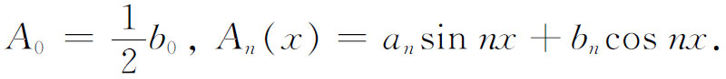
于是级数（4）等于
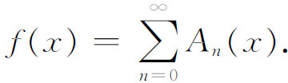
当然f（x）只对级数收敛的那些x值才有一个值。我们用Ω来表示级数本身。Ω的项对一切x或对某个x可以趋于零。黎曼分别讨论了这两种情形。
如果
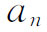
和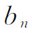
趋于零，则Ω的项对一切x趋于零。令F（x）是函数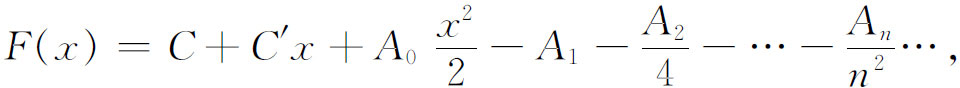
它是接连对Ω逐项积分两次而得到的。黎曼证明了F（x）对一切x收敛而且关于x连续。这时F（x）本身就能积分。黎曼证明了关于F（x）的一系列定理，这些定理转而导致使一个形如（4）的级数收敛到一个周期为2π的给定函数的必要充分条件。然后他给出了三角级数（4）（其中当n趋于∞时
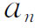
和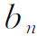
仍趋于0）在x的一个特殊值处收敛的充要条件。其次他考虑了另一情形，即
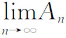
依赖于x的情形，并且给出了在x的特殊值处级数Ω收敛的条件和在特殊值x处的收敛判别法。他还指出，可以积分的f（x）可能没有傅里叶级数表示。而且还存在这样的不可积函数，级数Ω在任意接近的界限之间的无穷多个x值上收敛到这个函数。最后他指出，即使三角级数的an和bn当n→∞时都不趋于零，但这级数在一个任意小的区间中的无穷多个x值上可能收敛。
在斯托克斯和赛德尔引进了一致收敛的概念之后，傅里叶级数收敛的性质进一步受到人们的注意。从狄利克雷时期以来，人们已经知道，级数纵然收敛，一般也只是条件收敛，并且知道，级数的收敛性依赖于正项和负项出现的情况。海涅在1870年的一篇论文(57)中指出，有界函数f（x）可以唯一地表示成在［－π，π］上的一个三角级数这一结论，通常采用的证明是不完全的，因为级数可能不一致收敛，因此不能逐项积分。这就使人联想到还可能存在非一致收敛的三角级数，而它又确实表示一个函数。而且，一个连续函数有可能表示成傅里叶级数，而这个级数可以不一致收敛。这些问题引起了一系列新的研究，企图建立用三角级数表示一个函数的唯一性以及研究其系数是否一定是傅里叶系数。海涅在前面提到的论文中证明了满足狄利克雷条件的有界函数的傅里叶级数，在区间［－π，π］中去掉函数间断点的任意小邻域后剩下的部分，是一致收敛的。而在这些邻域中，收敛一定是不一致的。然后海涅证明：如果表示一个函数的三角级数具有上述的一致收敛性，那么级数是唯一的。
关于唯一性的第二个结果，等价于下述陈述：如果形如
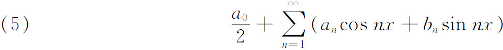
的三角级数是一致收敛的，而且在收敛的地方，即除去一个有限点集P外都是零，则系数全为零，因而当然在整个［－π，π］上级数表示零（函数）。
与三角级数和傅里叶级数的唯一性有关的问题引起了康托尔的兴趣，他研究了海涅的工作。康托尔是从寻找函数的三角级数表示的唯一性的判别准则开始他的研究工作的。他证明(58)了当f（x）用一个对一切x都收敛的三角级数表示时，就不存在同一形式的另一级数，它也对每个x收敛并且代表同一函数f（x）。在另一篇论文(59)中，他给出了上述结果的一个更好的证明。
他证明的唯一性定理可以重新叙述为：如果对于一切x，有一个收敛的三角级数表示零，则系数an和bn都是零。后来，康托尔在1871年的论文中证明了即使在有限个x值上不收敛，这结论仍旧成立。这是康托尔论述x的例外值集合（set of exceptional values）的一系列论文中的第一篇。他把唯一性的结果推广到允许例外值是无穷集的情形(60)。为了描述这种集合，他首先定义一个点p是一个点集S的极限点，如果包含p点的每一区间都包含S的无穷多个点。然后他引进了点集的导集的概念，它是由原点集的全部极限点构成的。于是就有第二导集，即导集的导集等。如果一个给定集合的第n个导集是一个有限点集，那么就说该给定集合是属于第n类的或第n阶的（或者说属于第一种的）。关于一个函数在区间［－π，π］上能否有两个不同的三角级数表示，或者零是否可以有非零的傅里叶表示的问题，康托尔最终的回答是：如果在该区间上除去第一种点集外（在这些点上级数的性质什么也不知道），对于一切x，三角级数之和为零，则级数的所有系数必须为零。在1872年的这篇论文中，康托尔奠定了点集论的基础，我们将在后一章中讨论。在19世纪末和20世纪初有许多别的数学家从事于唯一性问题的研究(61)。
在狄利克雷的研究工作之后的大约50年中间，人们都相信在［－π，π］上的任何一个连续函数的傅里叶级数都收敛到该函数。但是杜波依斯-雷蒙(62) 给出了（－π，π）上的一个连续函数，其傅里叶级数在一个特定点上并不收敛的例子。他还选了另一个连续函数，其傅里叶级数在一个到处稠密的点集上不收敛。在1875年(63)他证明了如果形如
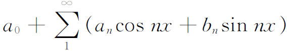
的三角级数在［－π，π］中收敛到f（x），而且如果f（x）是可积的［比黎曼意义更一般意义下的可积性，即f（x）可以在第一种集合上无界］，则该级数一定是f（x）的傅里叶级数。他还证明了(64)任一黎曼可积函数的傅里叶级数，即使不是一致收敛的，也可以逐项积分。
其后有许多数学家从事于早已为狄利克雷用一种方法回答了的问题的研究，这个问题就是，要给出函数f（x）具有收敛到f（x）的傅里叶级数的充分条件。有几个结果是经典的。若尔当（Camille Jordan）用他所引进的有界变差函数的概念给了一个充分条件(65)。令f（x）在［a，b］上有界，又令
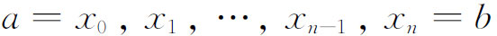
是这个区间的一种划分。令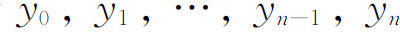
是f（x）在这些点上的值。则对每一个划分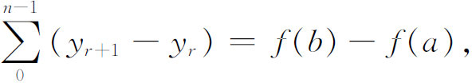
令t表示
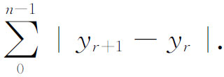
对［a，b］的每一种细分方式有一个t。当对应于［a，b］的所有划分方式和数t有一个上界时，则f就定义为在［a，b］上是有界变差的。
若尔当的充分条件说的是：可积函数f（x）的傅里叶级数在那样一些点上收敛到
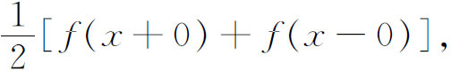
这些点各有一个邻域，使f（x）在该邻域中是有界变差的(66)。
19世纪60和70年代数学家们还考察了傅里叶系数的性质，在所得到的许多重要结果中，有一个就是所谓的帕塞瓦尔定理［帕塞瓦尔（Marc-Antoine Parseval）是在限制更严的条件下叙述这个定理的，见第29章第3节］，根据这个定理，如果f（x）和［f（x）］2是在［－π，π］上黎曼可积的，则
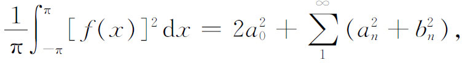
而且如果f（x）和g（x）及其平方黎曼可积，则
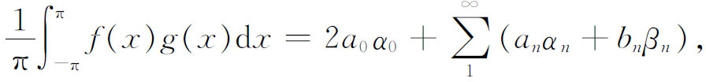
其中
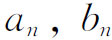
和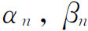
分别是f（x）和g（x）的傅里叶系数。